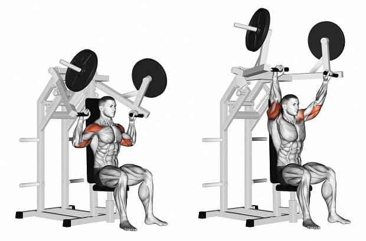
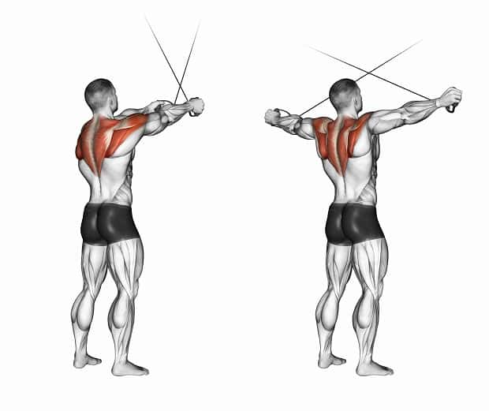
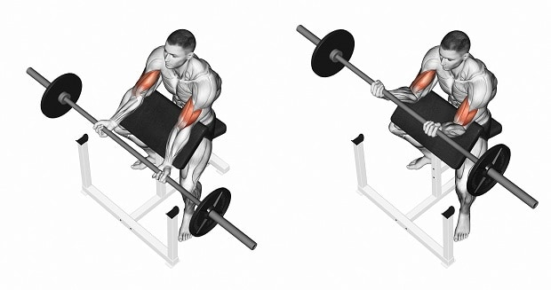
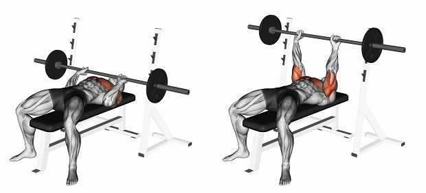

Упражнения для плеч: какие тренажеры использовать?
Жим сидя в тренажере
Данное движение больше всего похоже на жим гантелей, однако здесь траектория строго ограничена конструкцией тренажера. Упражнение является базовым, однако его следует выполнять после жима штанги или гантелей. Еще один вариант – выполнение в качестве разминки с легкими весами перед тяжелым жимом штанги стоя.
Отведения в кроссовере
В данном упражнении используются верхние ручки. Есть два основных варианта выполнения:
- Вы берете руками противоположные рукоятки, поднимаете руки на уровень чуть выше плеч и разводите их в стороны. Выполняйте движение медленно и с небольшим весом, старайтесь не сводить лопатки.
- Подразумевает канатную рукоять. Возьмите ее двумя руками, отойдите на пару шагов от стойки кроссовера и тяните ручку к себе, отводя локти в стороны. Важный момент – в большинстве случаев это упражнение выполняют с руками, расположенными в плоскости, параллельной полу. Добиться лучше эффекта поможет несколько другая техника, в которой руки в крайней позиции находятся в положении, как будто вы показываете двойной бицепс сзади.
Упражнения для рук: какие тренажеры использовать?
Подъемы на скамье Скотта
Преимущество данного упражнения заключается в невозможности читинга.
Вы плотно упираетесь в тренажер грудью и трицепсом, а во время подъема не стоит отрывать
от него руки. Благодаря такой конструкции здесь работает только бицепс. Чтобы при этом
исключить помощь мышц предплечья, возьмитесь открытым хватом (большой палец не противопоставляется
остальным) и не сгибайте/разгибайте кисти.
Движение можно выполнять как со штангой, так и с гантелью. Выберите для себя наиболее
удобный вариант или просто чередуйте их от тренировки к тренировке.
Жим лежа узким хватом
Базовое упражнение на трицепс. В меньшей мере задействуется грудь и передние дельты.
Техника выполнения:
- Расположитесь на прямой скамье. Плотно упритесь всей стопой в пол. Делать “мост” не нужно.
- Возьмитесь за гриф закрытым хватом чуть уже или на ширине плеч. Расстояние между руками должно быть примерно 20-30 см.
- На вдохе медленно опустите штангу на грудь, при этом не расставляйте локти в стороны, они должны идти как можно ближе к корпусу. Если при опускании вы чувствуете дискомфорт в запястьях, увеличьте ширину хвата, попробуйте опускать не до груди,
- На выдохе быстрым движением выжмите штангу, распрямляя до конца руку в локтевом суставе.